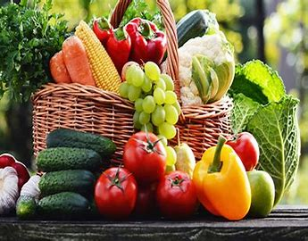
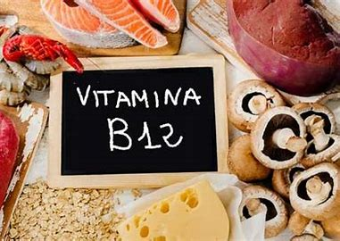

Salud en el veganismo
¿Que debo hacer para estar saludable?
Es importante la ingesta de altas cantidades de fruta y verdura; pero también de no excluir ningún alimento. La clave de una buena alimentación es saber cuáles son más saludables y cuáles deben relegarse a la etiqueta de ocasionales por con alto contenido en ácidos grasos saturados, azúcares y sal. Por ello, en el caso de optar por una alimentación vegana, debemos tener en cuenta algunos aspectos:
- Las dietas veganas estrictas se basan en el aporte únicamente de alimentos de origen vegetal como los cereales, la patata, las legumbres, las semillas, frutos secos, fruta, verdura y hortalizas. En general, cubre todas las necesidades nutricionales, a excepción de la vitamina B12, que, al encontrarse solamente en alimentos de origen animal, es imposible aportarla en una dieta vegana. Su déficit puede provocar anemia megaloblástica, dando lugar igual que la ferropénica a cansancio y debilidad. En alimentos de origen vegetal podemos encontrarla en: algas, hongos comestibles, levadura de cerveza, germen de trigo, soja y cereales enriquecidos.
- Debemos vigilar minerales como el calcio y el hierro. Aunque podemos encontrarlos en alimentos vegetales, no se encuentran en altas cantidades y es difícil llegar a la ingesta recomendada (calcio = 800 mg / día; y hierro = entre 10- 18mg/ día). Además, el calcio y el hierro que contienen los alimentos vegetales no se absorben fácilmente debido al exceso de fibra.
- Vigila al aporte de proteínas. En el caso de la energía, no tendría que haber problema ya que la ingesta de hidratos de carbono, a través de los cereales, patatas y legumbres, es suficiente para obtener energía (junto con las grasas procedentes de los frutos secos y aceites vegetales). El aporte de proteínas también podríamos considerarlo cubierto con la ingesta de estos mismos alimentos.

